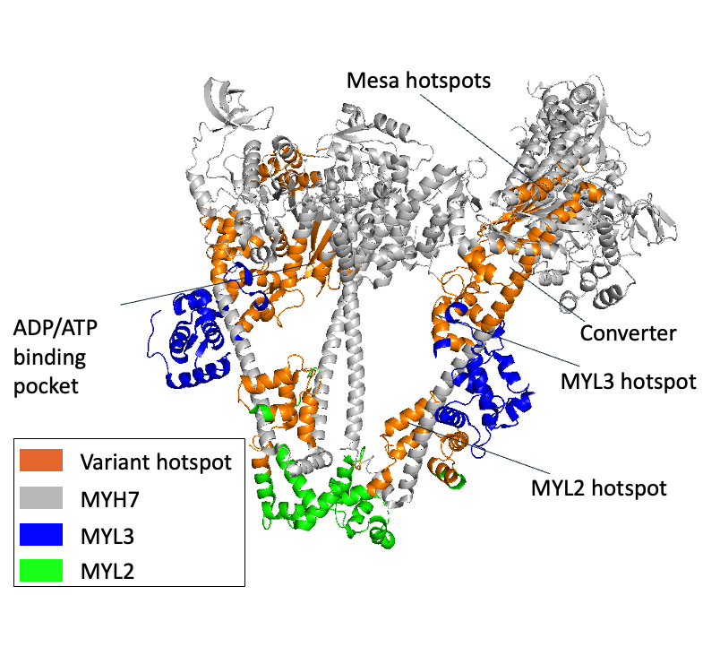

Spatial Genomics of the Cardiac Sarcomere
Structural biology · AlphaFold · Cluster analysis
This project, conducted at Stanford University in the lab of Professor Euan Ashley, develops a new framework to integrate clinical genomics (17,000+ patients), population-scale sequencing data, and structural models of sarcomeric proteins. Using spatial clustering and AI-based pathogenicity predictors such as AlphaMissense, we identified novel variant hotspots that inform disease mechanisms in hypertrophic cardiomyopathy.

3D sarcomere structure highlighting novel variant hotspots (orange)